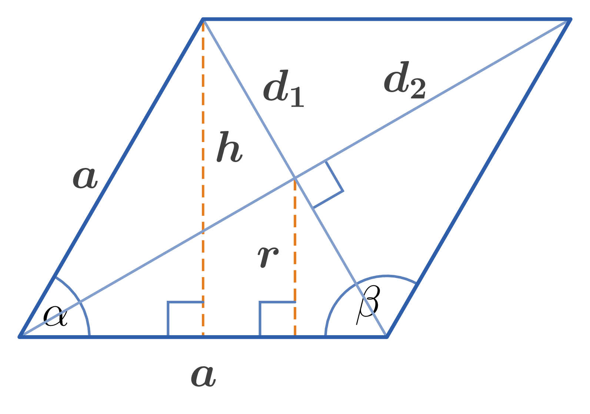

Side of a rhombus: $a$
Diagonals: $d_1,d_2$
Consecutive angles: $\alpha,\beta$
Altitude: $H$
Radius of inscribed circle: $r$
Perimeter: $L$
Area: $S$
1. Consecutive angles of a rhombus: $$\alpha + \beta = 180^{\circ}$$
2. Relationship between diagonals and side: $$d_{1}^{2} + d_{2}^{2} = 4a^{2}$$
3. Altitude of a rhombus: $$h = a \sin \alpha = \dfrac{d_{1}d_{2}}{2a}$$
4. Inradius of a rhombus: $$r = \dfrac{h}{2} = \dfrac{d_{1}d_{2}}{4a} = \dfrac{a \sin \alpha}{2}$$
5. Perimeter of a rhombus: $$L = 4a$$
6. Area of a rhombus: $$\begin{aligned} S &= ah = a^{2} \sin \alpha \\ S &= \dfrac{1}{2} d_{1} d_{2} \end{aligned}$$